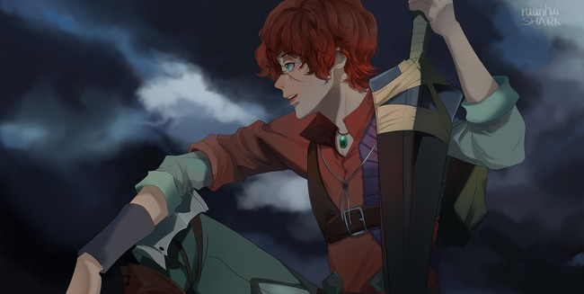

About me
#About me
Hello, world
and you guys~
Nice to meet you.
Haha
I'm a little worm in the tree.
Welcome to my cabin.

and you guys~
Nice to meet you.
Haha
I'm a little worm in the tree.
Welcome to my cabin.
Q：风在吹向哪里？
A：风，在吹向明天 (。ゝω・。)☆
----巴哈姆特之怒
A：风，在吹向明天 (。ゝω・。)☆
----巴哈姆特之怒
联系方式
邮箱：mymuyue@dingtalk.com
关于这个blog
作为一个 菜鸟 菜虫，充分认识到博客在自我学习中的重要性（其实更多地是羡慕大佬们都有炫酷的博客，自己也想要）
本来是想写一个springboot的web应用，但时间上有点来不了，用 Hexo 又不甘心
总之呢，就自己从网上到处借鉴之后写出了这个静态的blog（就是到处抄，别打我）
虽然不太好用，但自己写的含着泪也得用。
该blog使用了 Vue.js， markdown转换则借用了 mark.js
blog实现过程中遇到的问题正在整理ing
其他的，就
愿于冬日的漫漫长夜中，我们还期许着光明
$2019.8.11 My Blog Start
本来是想写一个springboot的web应用，但时间上有点来不了，用 Hexo 又不甘心
总之呢，就自己从网上到处借鉴之后写出了这个静态的blog（就是到处抄，别打我）
虽然不太好用，但自己写的含着泪也得用。
该blog使用了 Vue.js， markdown转换则借用了 mark.js
blog实现过程中遇到的问题正在整理ing
其他的，就
愿于冬日的漫漫长夜中，我们还期许着光明
$2019.8.11 My Blog Start